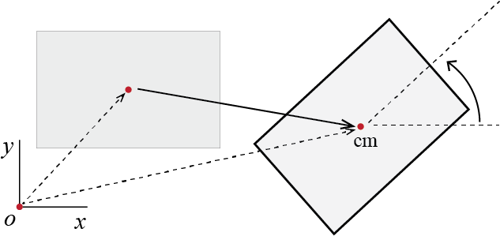
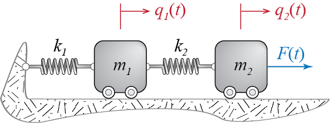

1 Fundamentals of Dynamics
Dynamics focuses on understanding how systems evolve in time. The modern definition of the term dynamical systems encompasses a broad range of social to physical systems with time-varying properties, but initially dynamics emerged as the study of motion of celestial and terrestrial bodies. In the study of such motion, the main objectives are the modeling of the dynamical system, i.e. formulating the equations that govern the motion of the system, and the prediction of response parameters that are to be observed during the motion, i.e. the solution of the equations of motion. The basic principles that govern the investigations to be presented in this text are the fundamental pillars of classical mechanics.
Classical mechanics differs from relativistic and quantum mechanics on a few fundamental assumptions pertaining to motion. A system is described as classical if all motion investigated occurs at speeds much less than the speed of light so that relativistic effects may be neglected. At the length and time scales relevant to classical mechanics, quantum effects such as those that require explicit description of the dynamics of electrons are deemed negligible as well. We will assume both restrictions to hold for all the systems to be investigated throughout this text. In this introductory chapter, we will review some of the basic principles of classical mechanics upon which the theory of structural dynamics rests.
1.1 Basic Definitions
The fundamental framework that will be used throughout will be Newtonian and there are certain a priori concepts in this framework that we generally take for granted.
In classical mechanics, motion of a body is geometrically described by the positions (locations) of its constituents in \(\mem{space}\), and the variation of these positions in \(\mem{time}\). The existence of space and time as two independent, ‘absolute’ entities are accepted without proof; these are intuitive concepts that lay the foundations for all that is to follow, as the geometric description of motion depends solely on these two concepts.
To define the position of an object, we need a reliable reference, for instance a stationary set of rigid “rulers” against which to measure distances, and a clock with which to measure time. Such a combination is called a \(\mem{frame of reference}\). The acceptance of space and time as absolute quantities is equivalent to assuming the existence of at least one \(\mem{inertial frame of reference}\) in which the laws of motion as stated by Newton are valid. In fact, any reference frame that is in a state of pure translation with constant velocity relative to this initial, absolute(ly standing still) frame would serve equally well as an inertial frame of reference. The key here is to use a non-accelerating (with respect to the ‘absolute’ space) frame of reference. Motion on a curved line, even with constant speed, and rotations lead to centripetal accelerations and hence reference frames undergoing such motions will generally not serve as inertial frames.
But then again, the earth, of course, is one such rotating and translating frame. So how come we use it, as we do in most earthbound dynamical analysis in engineering, as our frame of reference? The answer to this may not be given a priori but the validity of the choice must be evaluated a posteriori. It may be said that for many earthbound problems that involve distances and time spans comparable to those we commonly encounter in our everyday experiences, treating the earth as an inertial frame does not lead to significant errors, at least not significant enough to have any impact on the predictions deduced. We accept to err but we hope it is inconsequential. Hoping to err less, we can take into account the earth’s rotation about its polar axis, then expand further to take into account the earth’s rotation around the sun, then expand further to include the motion of the whole solar system in the milky way, then expand … How far one should go will depend on the specific problem studied. Unless otherwise explicitly stated, we will assume that the reference frames we use in our discussions are inertial (or may be treated as such for the particular problem at hand).
\(\mem{Mass}\) is another prior that we take for granted based on our experiences with weight. One definition of mass is to say that it is a measure of a body’s resistance to motion. This definition does implicitly refer to Newton’s equation of motion - force is equal to mass times acceleration - but it serves to hint at a difference between what are called gravitational mass and inertial mass. No difference between these two have been detected experimentally and so mass as far as we are concerned will be the quantity of matter that we can measure through its weight.
A fundamental idealization of dynamics is that of a \(\mem{particle}\), a geometric point, devoid of size but endowed with mass. The fundamental Newtonian law governing the motion of a particle is the well known (more on this later) \[ \fvec = \totm \avec \] with \(\totm\) denoting the mass of the particle, \(\avec\) denoting its acceleration, and \(\fvec\) denoting the resultant force acting on the particle. Please note that this is a vector equation, with underlined miniscule roman letters denoting vectors and italic miniscule roman letters denoting scalar variables. This is a convention we will adhere to throughout the text.
A body may be defined as a collection of particles. Legitimate objections are raised against this definition challenging the coherency of extending a geometrically non-dimensional entity to a geometrically finite dimensional system, and it may be preferred to define a body through a continuous medium to address this issue. If the distances between the particles are constant throughout the motion, or in other words if there is no deformation in the body, then the model is called a \(\mem{rigid body}\). The rigid body is another fundamental idealization of dynamics, used in the analysis of many problems. The main advantage brought about by this idealization is the significant reduction in the number of variables required to describe motion. Whenever deformations may be estimated to be negligible compared with the size of the body and such deformations have very limited impact on the motion of the whole, the body may be idealized as rigid to analyze its overall motion.
1.2 Degree of Freedom
We define the \(\mem{degree of freedom}\) of a system to be the number of independent ways a system may move; equivalently, it is the dimension of the system’s configuration space. Mechanical systems may translate and rotate. A particle unconstrained in any way has three degrees of freedom as it can, for example, translate independently along the three coordinate axes of a rectangular coordinate system. Consider now two particles, connected by an inextensible rod: even though one needs 6 coordinates to locate both particles, these coordinates are not all independent since the inextensible rod will always make sure that the distance between the particles will not change, and so the particles may not move independently. In this case, then, the system of two particles will have a smaller number of degrees of freedom. A constraint is any kinematic relationship that prescribes limitations on the motion of the system or any of its parts; the inextensibility of the rod in the two particle system, enforcing that the distance between the particles remains constant, is a constraint. Such constraints may be in the form of algebraic equations, in which case they are called holonomic, or they may be in differential, non-integrable forms, in which case they are called non-holonomic. We limit all our discussions to holonomic systems.
\(\mem{Generalized coordinates}\) are the specific variables that are used to describe the motion; accordingly, any kinematic quantity pertaining to a system (such as the position, velocity and/or acceleration of any point in the system) may be expressed as functions of the generalized coordinates (and their derivatives) chosen to model that system. The choice of generalized coordinates for a specific system is not unique and different sets of variables may serve equally well to formulate the system’s dynamics. The term generalized is historically used to note that these variables do not necessarily have to be directly associated with a coordinate basis. For any system with holonomic constraints one can always find a set of independent generalized coordinates, as many as the degree of freedom of the system, to describe all of kinematics.
To elucidate these definitions, consider, for example, a particle constrained to move on a circular path as shown in Figure 1.1. Assume that the circular path’s center is located at \((x=0,y=0,z=0)\) so that the path lies on the \(xy\)-plane. Then at any time \(t\) the particle is constrained to move on the \(xy\)-plane so that: \[ z(t) = 0 \qquad \forall t \] This is a constraint equation. The second constraint equation for this particle would have to specify that it is moving on a circular path of radius \(R\): \[ x^2(t) + y^2(t)= R^2 \qquad \forall t \] What remains is essentially just one degree of freedom (the particle may only rotate about the \(z\)-axis while it remains in the \(xy\)-plane), and the particle’s position can be located with only one generalized coordinate. For example, if one knows the value of \(x(t)\) at some time \(t\) then the other two rectangular coordinates may be calculated via the constraint equations as \(z(t)=0\) and \(y(t) = \pm \sqrt{R^2 - x^2(t)}\) (the sign is surprisingly not trivial but we’ll not dwell on it). One could easily well choose \(y(t)\) as the independent variable and treat the others as dependent. Better yet, one could define the angle \(0 \leq \theta(t) < 2\pi\) between the line \(op\) and the \(x\)-axis as the generalized coordinate, so that knowing \(\theta(t)\) one can locate wherever the particle is on the circle. In any case, for the single particle system of this example, its degree of freedom is \[ 3 - (\text{number of constraint equations}) = 3 - 2 = 1 \] If the system comprises \(n_p\) particles and there are \(b\) many constraint equations, then the degree of freedom \(N\) of the system is given by \[ N = 3n_p - b \]

It may be shown that an unconstrained rigid body has \(6\) degrees of freedom. Generally the motion is described through translations of a single point, most often the center of mass which we will denote by \(\com\), and three rotations of the rigid body about that point. If the rigid body is constrained so that its motion is planar1, as seen in Figure 1.2, then at most 3 degrees of freedom are possible. The location of all points on such a rigid body may be determined by tracking the translation of one point on it and the body’s rotation about the axis perpendicular to the plane in which that translation takes place.
In holonomic systems use of the phrases ‘generalized coordinate’ and ‘degree of freedom’ tend to intertwine such that ‘degree of freedom’ is sometimes used to refer to a specific generalized coordinate and the phrase ‘number of degrees of freedom’ is used to signify our original definition of degree of freedom. We’ll try to maintain the distinction but say that a system has \(N\) degrees of freedom (that it is an \(N\)-DOF system), if \(N\) independent variables suffice to completely describe the configuration of the system, and we will need \(N\) generalized coordinates to model the dynamics. To emphasize the independence of the generalized coordinates from specific coordinate systems, it is customary to denote a generalized coordinate by the letter \(\gc\). Employing this symbolism and based on the terminology elaborated above, if, in this text, a system is said to have \(N\)-DOFs, then its dynamics will be governed by the \(N\) generalized coordinates \[ \gc_1(t), \gc_2(t), \ldots, \gc_N(t) \]
Planar motion is the name given to motion of rigid bodies in which the velocity (vector) of any point on the rigid body always remains parallel to a fixed plane.↩︎
1.3 Fundamental Laws
Formulating the governing equations of motion for any system in classical mechanics is possible through a few different formulations and principles that may be shown to be equivalent. Throughout this text we will employ the Newton-Euler formulation, the virtual work formulation with d’Alembert’s principle, and/or the Lagrangian formulation. In this section we will present the fundamental issues without going into the details of the derivations for which the reader may consult various books on classical mechanics.2 It is important to note that the differences that will strike the reader are more procedural than essential in that all formulations will lead to identical (possibly up to a linear transformation) equations of motion for a given system. The choice of which method to use in the context of a specific problem is generally a matter of ease of application, personal experience and preference.
1.3.1 Newton-Euler Formulation
It is only natural to start with this formulation since historically Newton3 is the first scientist to have formulated some laws of motion, still used today, in a rigorous, mathematical manner and apply them for the solution of various problems. These laws as stated by Newton read as follows:
- Every body perseveres in its state of rest, or of uniform motion in a right line, unless it is compelled to change that state by forces impressed thereon.
- The alteration of motion is ever proportional to the motive force impressed; and is made in the direction of the right line in which that force is impressed.
- To every action there is always opposed an equal reaction: or the mutual actions of two bodies upon each other are always equal, and directed to contrary parts.
It is generally accepted that by body, Newton implies a particle or a finite sized body that could be treated as a particle; by motion, what we currently call (linear) momentum, i.e. the product of mass with velocity.
The first law is essentially a statement about the existence of an inertial frame in which the second law is applicable, and defines uniform motion (motion with a constant velocity along a straight line) as a state equivalent to that of rest.
The second law, in modern vectorial notation, postulates \[ \fvec = \divt{\linmom} = \divt{(\totm \vvec)} = \totm \avec \qquad(1.1)\] where the last equality follows for closed systems in which there is no mass transfer in and out of the system boundaries so that \(\totm\) is constant in time. We have introduced the notation \(\linmom = \totm \vvec\) to denote the linear momentum of a particle and we will use the same notation when we are talking about the linear momentum of a system comprising more than one particle. It is important to emphasize again that the velocity \(\vvec\) of the particle is measured in an inertial frame, as is its acceleration \(\avec\); otherwise, this law does not hold in its current form.
The third law states that when two particles interact, they do so through a pair of forces, equal in magnitude but opposite in direction, acting along the central line hypothetically connecting the two particles; its validity is generally accepted unless the velocities considered are so large that the velocity of propagation of interaction may have to be taken into account. In structural dynamics we assume this law is always valid.
The generalization of the laws of particles to bodies of finite sizes is generally attributed to Euler, who discussed governing equations of motion of rigid bodies in various works starting in the 1750s4 until the middle of the 1770s5. To somewhat economize on the notation, let us denote time derivatives by dots placed over the variables so that \(\pdivt{\upsilon}\) denotes the first derivative in an inertial frame, with respect to time, of some variable \({\upsilon}\), and \(\pddivt{\upsilon}\) denotes its second derivative. In modern language, the laws governing the dynamics of a closed system of particles, including rigid bodies, may be expressed as follows:
: The time derivative of the linear momentum of a system of particles is equal to the net resultant force of all the external forces acting on the particles composing the system. In a closed system with total mass \(\totm\), this law may be stated as: \[ \dlinmom = \fvec = \totm \avec_{\com} \qquad(1.2)\] where \(\avec_{\com}\) is the acceleration of the center of mass of the system and the last equality will be demonstrated below.
: The time derivative of the angular momentum of a system of particles, with respect to a stationary point \(o\) or the center of mass of the system \(\com\), is equal to the resultant moment at the same point all the external forces acting on the system: \[ \dangmom{o} = \moment{o} \quad \text{or} \quad \dangmom{\com} = \moment{\com} \qquad(1.3)\] where \(\dangmom{o}\) and \(\dangmom{\com}\) are the angular momenta of the system about points \(o\) and \(\com\), respectively, and \(\moment{o}\) and \(\moment{\com}\) are the resultant moments of the external forces and couples at the same points.
There are many details involved in applying these principles to a specific system but it may be best to define some of the quantities specified in these laws through illustration.
Consider the rigid body \(\RB{B}\) shown in Figure 1.3.6 An arbitrary point on the rigid body, having an infinitesimal mass \(\dm\), is located at position \(\pvec\) at some time \(t\), relative to a stationary observer in an inertial frame of reference. The linear momentum of this infinitesimal piece is defined as \(\vvec \dm\), where \(\vvec = \pdivt{\pvec}\) is the (absolute) velocity of \(\dm\) in the inertial frame. The linear momentum of the whole body is then defined as the sum (integral) of the linear momenta of all the infinitesimal masses:
\[ \linmom \equiv \int_{\RB{B}} \vvec \dm \qquad(1.4)\]
The center of mass of a system of particles turns out to be a significant point of reference. The location of the center of mass of the rigid body \(\RB{B}\) relative to a point, say in this case the stationary point \(o\), is defined through \[ \pvec_{\com} \equiv \frac{\int_{\RB{B}} \pvec \dm}{\int_{\RB{B}} \dm} = \frac{\int_{\RB{B}} \pvec \dm}{\totm} \qquad(1.5)\] where \(\totm\) is the mass of the whole body. For a closed system with no mass transfer and constant mass, the direct time derivative of this expression may be used to define the velocity and acceleration of the center of mass in the inertial frame of reference as \[ \vvec_{\com}=\frac{\int_{\RB{B}} \vvec \dm}{\totm}, \qquad \avec_{\com}=\frac{\int_{\RB{B}} \avec \dm}{\totm} \qquad(1.6)\] where \(\avec\) is the acceleration of the infinitesimal mass \(\dm\) in the inertial frame. With these definitions, the linear momentum of the whole body may be shown to be equal to \[ \linmom = \int_{\RB{B}} \vvec \dm = \totm \vvec_{\com} \qquad(1.7)\] and that its time derivative in the inertial frame may be shown, using Newton’s second and third laws, to yield, \[ \dlinmom = \totm \avec_{\com} = \fvec \qquad(1.8)\] where \(\fvec\) is the force resultant of all the external forces. The principle of linear momentum for a rigid body therefore boils down to the analysis of a single hypothetical particle, of mass equal to the total mass of the rigid body, which is located at the center of mass of the body and onto which acts the force resultant of all the external forces that act on whole rigid body.
Angular momentum is defined as the “moment of momentum”. The angular momentum of the infinitesimal mass \(\dm\), relative to a stationary point \(o\), is therefore defined as \(\pvec \times \vvec \dm\), and the angular momentum of the whole body is given by \[ \angmom{o} \equiv \int_{\RB{B}} \pvec \times \vvec \dm \qquad(1.9)\] It may be shown, using Newton’s second and third laws, that the time derivative of the angular momentum in the inertial frame yields \[ \dangmom{o} = \moment{o} \qquad(1.10)\] where \(\moment{o}\) is the resultant moment, at point \(o\), of all the external forces and couples.7 It turns out that even though \(\com\) is in general non-stationary, the principle of angular momentum leads to analogous results when \(\com\) is taken as the reference point. If the position of the infinitesimal mass \(\dm\) relative to \(\com\) is denoted by \(\prelcom\), then the angular momentum of the rigid body with respect to its center of mass may be defined in two equivalent ways as \[ \angmom{\com} = \int_{\RB{B}} \prelcom \vprod \vvec \dm = \int_{\RB{B}} \prelcom \vprod \vrelcom \dm \qquad(1.11)\] where the last equality is not immediate but may quickly be arrived at through the definition of the center or mass.8 It may be shown that the time derivative, in the inertial frame, of the angular momentum with respect to the center of mass leads to a result analogous to Equation 1.10: \[ \dangmom{\com} = \moment{\com} \qquad(1.12)\]
For general three dimensional motion of a rigid body, the principle of angular momentum will in general lead to nonlinear first order differential equations in angular velocities. For the simpler case of two dimensional motion, however, the equations simplify significantly: it may be shown that for a two dimensional rigid body motion that takes place in some plane with normal \(\widehat{\vctr{n}}\), the principle of angular momentum leads, through Equation 1.10 or Equation 1.12, to a relationship of the form \[ \smoment_{o} \widehat{\vctr{n}} = \inertia{o} \dtangvel \widehat{\vctr{n}} \qquad \mathrm{or} \qquad \smoment_{\com} \widehat{\vctr{n}} = \inertia{\com} \dtangvel \widehat{\vctr{n}} \qquad(1.13)\] where \(\inertia{o}\) and \(\inertia{\com}\) are moments of inertia9 of the body, with respect to the axes perpendicular to the plane at points \(o\) and \(\com\), respectively, \(\angvel\) is the angular velocity (rate of rotation) of the body, and its time derivative \(\dtangvel\) is the body’s angular acceleration.
To present an application of this formulation, let us work on deriving the equation of motion of a pendulum made of a rigid, homogeneous bar, as shown in Figure 1.4(a). The bar has mass per unit length \(\mlen\) and total mass \(m=\mlen \ell\). It is pinned to a stationary point \(o\) (in an inertial frame) and is acted upon by gravity \(\gravity\) along the vertical direction, directed downward. This is a single degree of freedom since essentially the only thing that the whole body may do is rotate about point \(o\); therefore, knowing, for example, the angle \(\gc\) the bar makes with the vertical, it is possible to locate all the points in the body and hence define its configuration. Let us choose this angle \(\gc\) as our generalized coordinate and formulate the equation of motion of the bar in terms of this variable.
One of the fundamental steps in the analysis of dynamical problems is the sketch of appropriate free body diagrams, which is an isolated sketch of the body, from which all geometric constraints are removed but the constraint forces are shown, along with all other external forces and geometrical dimensions. There is, however, a difference in the analysis of most systems in static equilibrium and the analysis of systems moving. When analyzing static equilibrium problems in structural mechanics, especially those focusing on linear elastic systems, the free body diagrams are often sketched assuming that the systems retain their initial configuration.10 The premise is that when displacements remain comparatively very small, it may be assumed that the difference between the deformed and the undeformed configurations will be negligible, and that equilibrium analysis may be conducted using the undeformed configuration. When motion is analyzed, however, the free body diagram must necessarily be sketched for a displaced and deformed configuration such that all forces that act on the system, some of which may be caused or modified by the motion itself, may be observed. We generally consider an instant such that the the generalized coordinates and their time derivatives have non-zero, positive values to ensure consistency in algebraic signs of variables.
The free body diagram of our bar is shown in Figure 1.4(b). Included in this figure are the unit vectors we will employ in our formulations, \(\vctr{n}\) and \(\vctr{t}\), which are attached to the bar and hence are moving with it.11 With the third unit vector \(\zuvec\) defined through \(\zuvec = \vctr{n} \vprod \vctr{t}\), we have a right handed orthogonal vector basis, with the angular velocity expressed as \(\angvelvec = \omega \pvctr{k}\).
Since this is a single degree of freedom system, all kinematic quantities should be expressible in terms of \(\gc\). The center of mass of the bar will be located at the middle of the bar since the bar is homogeneous, and its acceleration may be derived as \[\begin{align*} \pvec_{\com} & = \frac{\ell}{2} \pvctr{n} \\ \vvec_{\com} & = \frac{\ell}{2} \pdivt{\pvctr{n}} = \frac{\ell}{2} (\angvelvec \vprod \pvctr{n}) = \frac{\ell}{2} \dgc \pvctr{t} \\ \avec_{\com} & = \frac{\ell}{2} \ddgc \pvctr{t} + \frac{\ell}{2} \dgc \pdivt{\pvctr{t}} = \frac{\ell}{2} \ddgc \pvctr{t} + \frac{\ell}{2}\dgc (\angvelvec \vprod \vctr{t}) = - \frac{\ell}{2} \dgc^2 \pvctr{n} + \frac{\ell}{2} \ddgc \pvctr{t} \end{align*}\] The principle of linear momentum for this system may now be expressed as \[ m \avec_{\com} = - m \frac{\ell}{2} \dgc^2 \pvctr{n} + m \frac{\ell}{2} \ddgc \pvctr{t} = \fvec = ( m \gravity \cos \gc -R_{n})\pvctr{n} + (R_{t} - m \gravity \sin \gc) \pvctr{t} \qquad(1.14)\] These two equations, one for each direction, include three unknowns: \(R_{n}\), \(R_{t}\) and \(\gc\). A third equation may be obtained via the principle of angular momentum. To apply this principle to the system at hand, we may either try to evaluate the time derivative of the angular momentum from basic principles, or use previously derived results regarding moments of inertia. To go over the steps involved, let us choose the first option and try to find out the angular momentum of the system relative to the stationary point \(o\). The infinitesimal segment \(\dm = \mlen \diff s\) shown in Figure 1.4(c), located at \(\pvec = s \pvctr{n}\) relative to \(o\), has velocity \(\vvec = s \dgc \pvctr{t}\) so that its angular momentum is given by \[ \pvec \vprod \vvec \dm = s^2 \dgc (\vctr{n} \vprod \vctr{t}) \dm = s^2 \dgc \mlen \diff s \zuvec \] When integrated over the whole bar, the angular momentum of the system about point \(o\) will be obtained as \[ \angmom{o} = \int \pvec \vprod \vvec \dm = \int_{0}^{\ell} s^2 \dgc \mlen \diff s \zuvec = \frac{\mlen \ell^3}{3} \dgc \zuvec = \frac{m \ell^2}{3} \dgc \zuvec \qquad(1.15)\] Noting that the unit vector \(\zuvec\) maintains its magnitude (unit vector by definition) and direction at all times, the time derivative of the angular momentum yields \[ \dangmom{o} = \frac{m \ell^2}{3} \ddgc \zuvec \qquad(1.16)\] and the principle of angular momentum gives \[ \dangmom{o} = \moment{o} \quad \rightarrow \quad \frac{m \ell^2}{3} \ddgc \zuvec = - \frac{\ell}{2} m \gravity \sin \gc \zuvec \qquad(1.17)\] so that the equation of motion governing the time evolution of \(\gc\) is found to be \[ \frac{m \ell^2}{3} \ddgc = - \frac{\ell}{2} m \gravity \sin \gc \quad \rightarrow \quad \ddgc + \frac{3 \gravity}{2 \ell} \sin \gc = 0 \qquad(1.18)\] Point \(o\) was a somewhat obvious choice to refer to since the unknown reaction forces \(R_{n}\) and \(R_{t}\) do not contribute to the resultant moment at \(o\) and hence an equation addressing only \(\gc\) is constructed directly.
The Newton-Euler approach and the other methods that we will discuss differ mainly in this initial step, i.e. constructing the governing equation of motion. The solution procedure is likely to proceed as follows: the governing equation of motion, \[ \ddgc + \frac{3 \gravity}{2 \ell} \sin \gc = 0 \qquad(1.19)\] will have to be solved to find \(\gc (t)\). As this is a second order nonlinear differential equation, its solution is not trivial. On the other hand, if the motion takes place in the vicinity of the equilibrium configuration so that \(\gc\) and \(\dgc\) remain relatively small, then \(\sin \gc\) may be approximated by \(\sin \gc \approx \gc\), and the linearized equation of motion will be obtained as \[ \ddgc + \frac{3 \gravity}{2 \ell} \gc = 0 \qquad(1.20)\] Once \(\gc (t)\) is obtained, the unknown reaction forces may be calculated via the principle of linear momentum.
see, for example, H. Goldstein’s Classical Mechanics, first published in 1950 by Addison-Wesley Publishing Company, or D.T. Greenwoods’s Classical Dynamics, first published by Prentice-Hall in 1997.↩︎
I. Newton, Philosophiae Naturalis Principia Mathematica, or simply the Principia as it has come to be known. The original, published in 1687, is in Latin and here we will be quoting from its translation by A. Motte, specifically the version published in 1846 in New York by D. Adee.↩︎
L. Euler, “Découverte d’un nouveau principe de mécanique.” Mémoires de l’académie des sciences de Berlin, Vol. 6, pp. 185-217, 1752.↩︎
L. Euler, L, “Nova Methodus Motum Corporum Rigidorum Determinandi.” Novi Commentarii Academiae Scientiarum Petropolitanae, Vol. 20, pp. 208-238, 1776.↩︎
To minimize the details, we just discuss the expressions that pertain to rigid bodies. Most of the results discussed, in particular the fundamental laws, are valid for systems comprising discrete particle masses, with summations over all the particles replacing the integrals pertaining to rigid bodies.↩︎
Note that moment of a momentum (angular momentum) or a force will depend on the point with respect to which it is calculated. The angular momentum of a particle with respect to some point is in general not equal to its angular momentum with respect to some other point. This is not the case for linear momentum in that a particle will have a unique linear momentum in a given inertial frame.↩︎
As \(\vrelcom\) is essentially the relative velocity of \(\dm\) with respect to \(\com\) in the inertial frame, the last integral is sometimes referred to as the relative angular momentum. The difference may be important for an arbitrary reference point but for the center of mass the two integrals in Equation 1.11 yield the same result.↩︎
Recall that the moment of inertia of a body \(\RB{B}\) with respect to some axis is defined as \(\inrt \equiv \int_{\RB{B}} r^2 \dm\) where \(r\) is the distance between the axis and \(\dm\).↩︎
Some systems do in fact require that deformed configuration be considered in static analysis as well but structural analysis of many systems do indeed consider small deformations and deformation gradients so that force equilibrium is established in the undeformed configuration.↩︎
When unit vectors are rotating in an inertial frame, their time derivatives are non-zero since their direction changes. If \(\vctr{u}\) is such a unit vector which is rotating with angular velocity $ $ in an inertial frame, then its time derivative in that frame is given by \(\pdivt{\vctr{u}} =\angvelvec \vprod \vctr{u}\).↩︎
1.3.2 \(\mathrm{d}\)’Alembert’s Principle and Virtual Work
Even though it is within the realm of the Newton-Euler formulations, d’Alembert’s principle has proven to be quite a useful rephrasing, especially for those well trained in static analysis. There are slightly different variations of the statement and here we phrase it in the form most conducive to static analysis tools: If one considers a hypothetical force to act on a particle, acting in opposite direction to the particle’s acceleration and with magnitude equal to the product of the particle’s mass with its acceleration, then the particle would be in static equilibrium instantaneously under the joint action of this hypothetical force and all the external forces acting on it.
For a single particle, this statement amounts to saying \[ \fvec - m \avec = \zerovec \qquad(1.21)\] where it seems the only thing we have done is to move the right hand side of Equation 1.1 to the left of the equality sign. While it may be so, the emphasis is not on the algebra but rather on the treatment of the problem.
The real benefit of this rephrasing will generally be more pronounced for systems of rigid bodies. For ease of reference, let us call the aforementioned hypothetical force the d’Alembert force. When the corresponding d’Alembert forces are acted on at each point in a system of particles or even a rigid body, each particle, and consequently the whole system, will instantaneously be in a state of static equilibrium. It may be shown that when these forces are taken into account, one can write the following equations for the instantaneous static equilibrium of a two dimensional rigid body: \[ \fvec - \totm \avec_{\com} = \zerovec, \qquad \begin{array}{c} \smoment_{o} - \inertia{o} \dtangvel = 0 \\ \text{or} \\ \smoment_{\com} - \inertia{\com} \dtangvel = 0 \end{array} \qquad(1.22)\] The term \(- \totm \avec_{\com}\) is the force resultant and \(- \inertia{o} \dtangvel\) is the moment resultant, at point \(o\), of all the d’Alembert forces that should be acting on the system; similarly, \(- \inertia{\com} \dtangvel\) is their moment resultant at point \(\com\).
Let us go back to the pendulum example, sketched again in Figure 1.5. The acceleration of the infinitesimal piece of mass \(\dm\), located at a distance of \(s\) to the stationary point \(o\) is given by12
\[ \avec = -s \dgc^2 \vctr{n} + s \ddgc \vctr{t} \] and the components are shown in Figure 1.5 (a). For each of these infinitesimal segments, we could add the corresponding d’Alembert forces so that each segment may be considered to be instantaneously in static equilibrium. When all the d’Alembert forces are included in the free body diagram, as shown in Figure 1.5 (b), the whole system may now be considered to be in static equilibrium at the instant considered. The d’Alembert forces shown with dotted lines and arrows are distributed loads per unit length, acting in the directions indicated by the arrows. Therefore we now have, from static equilibrium equations, \[ \sum \sforce_{t} = 0 \quad \rightarrow \quad R_{t} - \frac{1}{2} (\mlen\ell\ddgc)(\ell) - m \gravity \sin \gc = 0 \qquad(1.23)\] \[ \sum \sforce_{n} = 0 \quad \rightarrow \quad R_{n} - \frac{1}{2} (\mlen\ell\dgc^2)(\ell) - m \gravity \cos \gc = 0 \qquad(1.24)\] \[ \sum \smoment_{o} = 0 \quad \rightarrow \quad - \frac{\ell}{2} m \gravity \sin \gc - \frac{2 \ell}{3}\frac{1}{2} (\mlen\ell\ddgc)(\ell)= 0 \qquad(1.25)\] which leads, after some rearranging, to the following equation of motion for \(\gc\): \[ \ddgc - \frac{3}{2} \frac{\gravity}{\ell} \sin \gc = 0 \qquad(1.26)\] It must be noted that this equation is identical to Equation 1.19.
d’Alembert’s principle finds its full potential when virtual work is used in complex systems usually involving multiple degrees of freedom. In order to focus on the general principle we will define and briefly present the application of the virtual work approach to the simple pendulum problem we have been studying, but there will be ample opportunities to revisit the principle in latter chapters.
In modern language, the \(\rem{principle of virtual work}\) states that if a system is in static equilibrium, then the internal virtual work that would be done by the system, if it were to go through some virtual displacements and deformations consistent with the imposed constraints, would have to be equal to the work done by the external forces as the system moves through such displacements and deformations. This statement is more appropriately called the principle of virtual displacements; there is also an alternative statement of virtual work in which the forces rather than the displacements are fictitious. Since we want to emphasize the concept of work, we will refer to the more general principle of virtual work.13
To apply the principle of virtual work to our rigid bar pendulum, we must consider a virtual variation in the generalized coordinate \(\gc\). Let us denote this virtual variation as \(\vgc\), as shown in Figure 1.6. Since the inclusion of d’Alembert forces allows us to treat the dynamic problem as an equivalent static problem, the principal of virtual work leads to \[ \vwork_{int} = \vwork_{ext} \qquad(1.27)\] where \(\vwork_{int}\) is the virtual work done by the internal forces during the virtual displacement \(\vgc\), and \(\vwork_{ext}\) is the external forces during the same virtual displacement.
Since the bar is rigid and there is no deformation in any of the components during the virtual displacement, the internal virtual work is zero for the system., i.e. \(\vwork_{int} = 0\). As for the external virtual work, the only external forces that will do work during the virtual displacement are the tangential d’Alembert forces and the tangential component of the weight. The reaction forces \(R_{n}\) and \(R_{t}\) do no work since no displacement results at the point of application of these forces during the virtual displacement: this is a direct consequence of our choice of imposing virtual displacements consistent with the kinematic constraints. The d’Alembert forces along the radial direction will do no work either since the displacements that will occur, due to the virtual displacement \(\vgc\), at the points of application of these forces will be perpendicular to the forces; the same is true for the radial component of the weight of the bar. Since the single force resultant of the triangular distribution of tangential d’Alembert forces is given by \(\mlen \ell^2 \ddgc / 2 = m\ell \ddgc / 2\) and this resultant acts at a distance \(2\ell/3\) to the center of rotation, as shown in Figure 1.6 (b), the virtual work done by the external forces as the bar goes through \(\vgc\) is given by \[ \vwork_{ext} = - (m \gravity \sin \gc)\left(\frac{\ell}{2} \vgc \right) - \left(\frac{m\ell \ddgc}{2} \right)\left(\frac{2\ell}{3} \vgc \right) \] where we have assumed \(\vgc\) is small enough so the paths travelled by the points of application of the forces involved, which would be circular arcs for large values of \(\vgc\), may be approximated by straight lines of the tangents, given by \(\ell \vgc /2\) and \(2 \ell \vgc /3\). The principal of virtual work for this system therefore leads to \[ \vwork_{ext} = - \left(m \gravity \frac{\ell}{2} \sin \gc + m\frac{\ell^2}{3} \ddgc \right) \vgc = 0 \] and since this result must be valid for arbitrary values of \(\vgc\), the term in the parentheses must be zero, leading to \[ m\frac{\ell^2}{3} \ddgc + m \gravity \frac{\ell}{2} \sin \gc = 0 \quad \rightarrow \quad \ddgc + \frac{3 \gravity}{2 \ell} \sin \gc = 0 \] The final equation is, of course, identical to the ones previously derived through alternative methods.
One can start with the position vector \(\pvec = s \vctr{n}\), take its time derivative to get to the velocity as \(\vvec = \pdivt{\pvec} = s \pdivt{\vctr{n}} = s (\angvelvec \vprod \vctr{n}) = s \dgc \vctr{t}\), and then take the time derivative of the velocity to get \(\avec = \pdivt{\vvec} = s \ddgc \vctr{t} + s \dgc \pdivt{t} = -s \dgc^2 \vctr{n} + s \ddgc \vctr{t}\). Note that the time derivative of \(s\) is zero on virtue of the body being rigid so that the distance between any two points on the body does not change with time.↩︎
“Virtual,” because this is essentially a thought experiment; these displacements and deformations do not actually take place in some finite time as real displacements do, they are assumed to hypothetically take place with time frozen at some instant. Although not absolutely necessary, the virtual displacements and deformations are generally taken to be (very) “small” so that the geometry is not highly deformed during these deformations, and the variations in the force field do not alter conditions of equilibrium.↩︎
1.3.3 Lagrange’s Equations
Lagrange14 is credited for transforming mechanics from the realm of geometry to the realm of analysis in his seminal work ‘Analytical Mechanics’ published almost exactly after one hundred years from the Principia. His equations of motion, referred to as Lagrange’s equations, may be derived via virtual work and d’Alembert’s principle, as well as the principle of least action. In this section we will not provide the derivation of these famous equations but will just aim to highlight the fundamental issues and equations.
At the heart of Lagrangian formulation is the concept of energy. Let us assume that a (holonomic) system has \(N\)-DOFs, with its kinematics defined by generalized coordinates \(\gc_{1}, \gc_{2}, \ldots, \gc_{N}\). The kinetic energy \(\ke\) of the system will in general be an explicit function of these generalized coordinates as well as their time derivatives, called the generalized velocities, and possibly also of time: \[ \ke = \ke(\gc_{1}, \gc_{2}, \ldots, \gc_{N}, \dgc_{1}, \dgc_{2}, \ldots, \dgc_{N}, t) \] The forces that act on the system are generally classified as those that may be derived from a potential, i.e. conservative forces, and those that may not, i.e. non-conservative forces. The potential \(\pe\) of the conservative forces will in general will be an explicit function of the generalize coordinates and possibly also of time: \[ \pe = \pe(\gc_{1}, \gc_{2}, \ldots, \gc_{N}, t) \] If there are no non-conservative forces acting on the system, then Lagrange’s equations may be expressed in the following form: \[ \frac{\diff}{\diff t} \left(\frac{\partial \ke}{\partial \dgc_{i}}\right) - \frac{\partial \ke}{\partial \gc_{i}} + \frac{\partial \pe}{\partial \gc_{i}} = 0 \qquad \text{for} \quad i=1,2,\ldots,N \qquad(1.28)\] Note that these represent \(N\) equations, one for each generalized coordinate \(i=1,2,\ldots,N\), but each equation may contain all the other generalized coordinates as well so that the resulting equations are in general coupled.
If there are non-conservative forces as well, then the equations in Equation 1.28 will have to be modified. Let \(\vwnc\) denote the work done by the non-conservative forces during virtual displacements \(\vgc_{1}, \vgc_{2}, \ldots, \vgc_{N}\). In a holonomic system this work will be a simple linear function of the virtual displacements that may be expressed as \[ \vwnc = \vforce_{1} \vgc_{1} + \vforce_{2} \vgc_{2} + \ldots + \vforce_{N} \vgc_{N} \] where the coefficients of the virtual displacements, \(\vforce_{i}\), are called generalized forces. It may be shown that in this case, Lagrange’s equations will be of the form:15 \[ \frac{\diff}{\diff t} \left(\frac{\partial \ke}{\partial \dgc_{i}}\right) - \frac{\partial \ke}{\partial \gc_{i}} + \frac{\partial \pe}{\partial \gc_{i}} = \vforce_{i} \qquad \text{for} \quad i=1,2,\ldots,N \qquad(1.29)\]
Finally, using the Lagrangian \(\lagrangian\), defined conventionally as \(\lagrangian = \ke - \pe\), the equations may also be expressed as \[ \frac{\diff}{\diff t} \left(\frac{\partial \lagrangian}{\partial \dgc_{i}}\right) - \frac{\partial \lagrangian}{\partial \gc_{i}} = \vforce_{i} \qquad \text{for} \quad i=1,2,\ldots,N \qquad(1.30)\] since \(\pe\) is not a function of the generalized velocities \(\dgc_{i}\).
Before discussing further details, let us apply this approach to the rigid bar pendulum we have been studying. Consider the sketch shown in Figure 1.7. The velocity of an infinitesimal segment of the bar, located at a distance \(s\) to the center of rotation \(o\), is given by \(\vvec = s \dgc \pvctr{t}\). The kinetic energy of this segment will then be equal to \(\frac{1}{2}(\vvec \sprod \vvec) \dm = \frac{1}{2}(\vvec \sprod \vvec) \mlen \diff s\). The kinetic energy of the whole bar is calculated by summing the contributions of all the segments that make up the bar so that \[ \ke = \int_{0}^{\ell} \frac{1}{2}(\vvec \sprod \vvec) \mlen \diff s = \int_{0}^{\ell} \frac{\mlen}{2} \dgc^2 s^2 \diff s = \frac{m\ell^2}{6} \dgc^2 \] As for the potential energy, we first note that the conservative force acting on the system is the weight. Let us assume that the potential energy of the system when \(\gc = 0\) is some unknown value \(\pe_o\); there is always the possibility that the system possesses some potential even if it is not moving but this initial value would have to be independent of the generalized coordinates. As the bar moves, the center of mass, which we assume to coincide with the center of gravity when the variations in the gravitational field may be neglected, rises by an amount of \((\frac{\ell}{2} - \frac{\ell}{2}\cos \gc)\), and so the potential energy of the system at some arbitrary instant is given by: \[ \pe = \pe_o + m \gravity \left(\frac{\ell}{2} - \frac{\ell}{2}\cos \gc\right) \]
Note that there are no non-conservative forces acting except perhaps the constraint forces, i.e. the support reactions \(R_{n}\) and \(R_{t}\). One of the characteristics of the Lagrangian approach is that such constraint forces never do work through any virtual displacements so that constraint forces never contribute to the generalized forces. Therefore we may simply use the form of the Lagrange’s equations given by Equation 1.28 for this system. Evaluating the individual terms yields \[ \frac{\partial \ke}{\partial \dgc} = \frac{m\ell^2}{3} \dgc, \quad \frac{\diff}{\diff t}\left(\frac{\partial \ke}{\partial \dgc}\right) = \frac{m\ell^2}{3} \ddgc, \quad \frac{\partial \ke}{\partial \gc} =0, \quad \frac{\partial \pe}{\partial \gc} = \frac{m \gravity \ell}{2} \sin \gc \] so that Equation 1.28 leads to: \[ \frac{m\ell^2}{3} \ddgc + \frac{m \gravity \ell}{2} \sin \gc = 0 \quad \rightarrow \quad \ddgc + \frac{3 \gravity}{2\ell} \sin \gc = 0 \]
When working with rigid bodies, it may not be necessary to calculate the kinetic energy from basic principles. In fact, it may be shown that the kinetic energy of a rigid body may be expressed as \[ \ke = \frac{1}{2} \totm (\vvec_{\com} \sprod \vvec_{\com}) + \frac{1}{2} \angmom{\com} \sprod \angvelvec \qquad(1.31)\] where \(\totm\) is the total mass of the body, \(\vvec_{\com}\) is the velocity of the body’s center of mass, \(\angmom{\com}\) is the body’s angular momentum about its center of mass, and \(\angvelvec\) is its angular velocity. When the body is planar, as for example we may assume a floor plate to be, with planar dimensions much bigger than the depth and the plate moving in that plane, the kinetic energy expression will simplify to \[ \ke = \frac{1}{2} \totm \vel_{\com}^2 + \frac{1}{2} \inertia{\com} \angvel^2 \qquad(1.32)\] where \(\vel_{\com}\) is the speed with which the center of mass moves, \(\inertia{\com}\) is the moment of inertia of the body about the axis perpendicular to the plane of motion and passing through point \(\com\), and \(\angvel\) is the angular speed. Finally, if the planar body is simply rotating in a plane about a fixed point \(o\), then the kinetic energy expression further simplifies to \[ \ke = \frac{1}{2} \inertia{o} \angvel^2 \qquad(1.33)\] where \(\inertia{o}\) is the moment of inertia of the body about the axis perpendicular to the plane of motion and passing through point \(o\). Since the moments of inertia of most regularly shaped homogeneous bodies are tabulated in many references, the use of these expressions may be most beneficial. For example, if we look up the moment of inertia of a homogeneous rod, of length \(\ell\) and total mass \(\totm\), about a perpendicular axis passing through one of its ends, we’ll see that it is given by \(\inertia{o} = \totm \ell^2 / 3\). Since the angular speed of our rigid bar pendulum is \(\omega = \dgc\), use of Equation 1.33 for our rigid bar pendulum will simply lead to \[ \ke = \frac{1}{2} \inertia{o} \angvel^2 = \frac{m \ell^2}{6} \dgc^2 \]
J.L. Lagrange, Mécanique Analytique, 1788. A famous quote from his preface to the first edition is: “No figures will be found in this work. The methods I present require neither constructions nor geometrical or mechanical arguments, but solely algebraic operations subject to a regular and uniform procedure.” We quote from the English translation by A. Boissonnade and V.N. Vagliente, 1997.↩︎
Generalized force are not necessarily actual forces; if the generalized coordinate is a rotation, for example, the generalized force will have units of moment.↩︎
1.3.4 Constraint Forces
The preceding presentation is too concise to include much of the finer details. In any case it should be clear that all the approaches discussed above will ultimately yield the same equations of motion (possibly up to a linear transformation) for a given system when one employs the same generalized coordinates to describe the kinematics. Which approach to use in the analysis of a particular problem will generally depend on the experience and personal preference of the analyst as well as the complexity of the system. There is, however, an important issue that must be brought to attention since it may have a significant affect on the choice, and that is whether or not the analyst is interested in calculation of constraint forces, which may actually be quite important for design purposes.
While using the Newton-Euler approach, or static equilibrium equations via d’Alembert’s principle, the constraint forces appear explicitly in at least some of the equations of motion. Once the motion is solved for, the reaction forces may then be solved directly from these equations. Recall, for example, the equations we derived for the equilibrium of the rigid bar pendulum employing d’Alembert’s principle, i.e. Equation 1.23-Equation 1.26. The motion of the pendulum is to be evaluated from the equation of motion, i.e. Equation 1.26, by solving for \(\gc (t)\). Once the time history of \(\gc\) is obtained, Equation 1.23 and Equation 1.24 may be used to solve for the reaction forces.
These reaction forces, or any other constraint force for that matter, will not show up explicitly in the equations of motion when we use virtual work or Lagrange’s equations, since in both of these approaches, the virtual displacements will be chosen to be compatible with geometric constraints. If we want to evaluate constraint forces, then we will have to derive additional equations through other means after we solve the equation of motion that is obtained via these methods. This is not necessarily a drawback since we will see that derivation and solution of the equations of motion will be the main effort in structural dynamics, and most often not having the constraint forces appear explicitly in the equations will provide immense simplification.
EXAMPLE 1 .1
As an exercise in a simple multi-DOF (MDOF) system, let us try to derive the equations of motion for the two horizontally moving blocks shown in Figure 1.8.

This system comprises two masses, \(m_1\) and \(m_2\), which are connected by two linear springs, with spring coefficients \(k_1\) and \(k_2\). The second mass is acted upon by an external force \(\sforce(t)\). The system has two degrees of freedom since both masses may translate only along the horizontal direction. We’ll use the translations \(\gc_1 (t)\) and \(\gc_2 (t)\) as our generalized coordinates. Both are defined positive towards the right, as indicated in the figure, of their respective references; these reference points correspond to the state when masses are standing still and there are no deformations in the springs. We assume friction to be negligible and gravity is acting downward so that it has no bearing on the horizontal internal or external forces. We will try to derive the equations that govern the motion of this system using all the methods we have been discussing above. In the following discussions we will omit explicit reference to time in most places to keep the symbolism as simple as possible.

Once the generalized coordinates are chosen, the free body diagrams of the components may be sketched. Since this system has two distinct bodies, each of which may be treated as a rectilinearly translating particle, we have to sketch two free body diagrams, one corresponding to each body. Such free body diagrams are shown in Figure 1.9. While sketching these free body diagrams, we have implicitly assumed a few key issues which we now verbalize. First and foremost, we have sketched the diagrams for an instant at which \(\gc_{1} > 0\) and \(\gc_{2} > 0\); this is to ensure that the sign convention is properly established in the scalar variables (since we are not using vectors in this one dimensional problem); the implied directions of the forces are consistent with this initial assumption, and the forces that depend on the generalized coordinates will automatically reverse when the signs of the generalized coordinates reverse. Note that once the sign convention for the generalized coordinates is set, i.e. in this case \(\gc_{i}>0\) if it is to the right of the reference point, this choice also has consequences for the derivatives of the coordinates as well, so that velocities \(\dgc_{i}\) and accelerations \(\ddgc_{i}\) are now also positive if they are directed rightward. Secondly, we have not shown frictional forces since we had assumed friction was negligible, and we have simply not shown any forces in the vertical direction because the system is in static equilibrium in that direction, i.e. the masses do not move in the vertical direction and the vertical forces will not contribute to the horizontal equations of motion. The latter part of this clause is not necessary but is helpful in that it limits overcrowding of the sketches. Third, we have assumed, as indicated by the directions of the spring forces acting between the masses, that at this instant \(\gc_{2} > \gc_{1}\); this assumption has no bearing on the results, and the only important issue is the compliance of the assumed directions of the forces with this assumption.
Newton-Euler laws of motion demand that for each mass, we’ll have \(\fvec = \totm \avec\). Expressing this condition in the horizontal direction alone will lead to \[\begin{align*} - k_{1} \gc_{1} + k_{2} (\gc_{2}-\gc_{1}) & = m_{1} \ddgc_{1}\\ - k_{2} (\gc_{2}-\gc_{1}) + \sforce & = m_{2} \ddgc_{2} \end{align*}\] and when the equations are re-arranged, we’ll have \[\begin{align*} m_{1} \ddgc_{1}(t) + (k_{1} + k_{2}) \gc_{1}(t) - k_{2} \gc_{2}(t) & = 0 \\ m_{2} \ddgc_{2}(t) - k_{2} \gc_{1}(t) + k_{2} \gc_{2}(t) & = \sforce(t) \end{align*}\] which could be written in matrix form as \[ \begin{bmatrix} m_1 & 0 \\ 0 & m_2 \end{bmatrix} \begin{Bmatrix} \ddgc_1 (t) \\ \ddgc_2 (t) \end{Bmatrix} + \begin{bmatrix} k_1 + k_2 & -k_2 \\ -k_2 & k_2 \end{bmatrix} \begin{Bmatrix} \gc_1 (t) \\ \gc_2 (t) \end{Bmatrix} = \begin{Bmatrix} 0 \\ \sforce (t) \end{Bmatrix} \] or more generally as \[ \mmat \ddgcvec (t) + \kmat \gcvec (t) = \ldvec (t) \] which, as we will so often see in the latter chapters, is one of the classical forms of the equations of motion for systems with multi degrees of freedom.
To use virtual work with d’Alembert’s principle, we first have to sketch the free body diagrams with the d’Alembert’s forces that will bring each mass into instantaneous static equilibrium. Such free body diagrams are shown in Figure 1.10. Since we have discarded all the springs and shown the spring forces as acting on the mass externally, all the forces shown in this free body diagram are external to the individual components. The virtual work done by the external forces through arbitrary virtual displacements \(\vgc_{1}\) and \(\vgc_{2}\) should therefore be equal to zero: \[ [- k_{1} \gc_{1} + k_{2} (\gc_{2}-\gc_{1}) - m_{1} \ddgc_{1}] \vgc_{1} + [- k_{2} (\gc_{2}-\gc_{1}) + \sforce - m_{2} \ddgc_{2}] \vgc_{2} = 0 \] Since this condition must be satisfied for arbitrary virtual displacements, including when \(\vgc_{1} = 0\) and \(\vgc_{2} > 0\) or vice versa, it must be true that the coefficients of the virtual displacements must be zero. Therefore we have \[\begin{align*} - k_{1} \gc_{1} + k_{2} (\gc_{2}-\gc_{1}) - m_{1} \ddgc_{1} & = 0\\ - k_{2} (\gc_{2}-\gc_{1}) + \sforce - m_{2} \ddgc_{2} & = 0 \end{align*}\] and rearranging the equations leads again to \[\begin{align*} m_{1} \ddgc_{1}(t) + (k_{1} + k_{2}) \gc_{1}(t) - k_{2} \gc_{2}(t) & = 0 \\ m_{2} \ddgc_{2}(t) - k_{2} \gc_{1}(t) + k_{2} \gc_{2}(t) & = \sforce (t) \end{align*}\]
As for Lagrange’s equations, the spring forces, being conservative, may be derived from the following potential energy function \[ \pe = \frac{1}{2}k_{1} \gc^2_{1} + \frac{1}{2}k_{2}(\gc_{2}-\gc_{1})^2 \] since \(\gc_{1}\) and \((\gc_{2}-\gc_{1})\) are the elongations in the two springs. We have assumed \(\pe_{o} = 0\) since it is independent of the generalized coordinates; it is just a constant value to be added so that it has no bearing on the final equations. The kinetic energy of the system is given by \[ \ke = \frac{1}{2} m_{1} (\vvec_{1}\sprod\vvec_{1}) + \frac{1}{2} m_{2} (\vvec_{2}\sprod\vvec_{2}) = \frac{1}{2} m_{1} \dgc^{2}_{1} + \frac{1}{2} m_{2} \dgc^{2}_{2} \] The only non-conservative force, apart from any support reactions and constraint forces that do not contribute to the virtual work expression, is the external force \(\sforce\). The work done by the external non-conservative forces through virtual displacements \(\vgc_{1}\) and \(\vgc_{2}\) therefore becomes \[ \vwnc = (0) \vgc_{1} + (\sforce) \vgc_{2} = \vforce_{1} \vgc_{1} + \vforce_{2} \vgc_{2} \] Lagrange’s equations now lead to, \[\begin{gather*} \frac{\diff}{\diff t} \left(\frac{\partial \ke}{\partial \dgc_{1}}\right) - \frac{\partial \ke}{\partial \gc_{1}} + \frac{\partial \pe}{\partial \gc_{1}} = m_1 \ddgc_{1} - 0 + (k_1 \gc_{1} - k_2 (\gc_{2}-\gc_{1})) = \vforce_{1} = 0 \\ \frac{\diff}{\diff t} \left(\frac{\partial \ke}{\partial \dgc_{2}}\right) - \frac{\partial \ke}{\partial \gc_{2}} + \frac{\partial \pe}{\partial \gc_{2}} = m_2 \ddgc_{2} - 0 + k_2 (\gc_{2}-\gc_{1}) = \vforce_{2} = \sforce \end{gather*}\] and rearranging the terms once again leads to the following equations of motion: \[\begin{align*} m_{1} \ddgc_{1}(t) + (k_{1} + k_{2}) \gc_{1}(t) - k_{2} \gc_{2}(t) & = 0 \\ m_{2} \ddgc_{2}(t) - k_{2} \gc_{1}(t) + k_{2} \gc_{2}(t) & = \sforce(t) \end{align*}\]
EXAMPLE 1 .2
Let us try to derive the equation of motion that would govern the small amplitude vertical motion of the assembly shown in Figure 1.11.
The bars are rigid but massless, and the springs are linear with the coefficients indicated. Gravity is to be ignored in the analysis.
For all its complex looking construct with multiple bars, this is a relatively simple single DOF system when one considers small amplitude motion around the initial equilibrium configuration shown. As the assembly moves, the two horizontal bars will rotate about their respective supports, and the vertical bar that connects the two will remain vertical and move along the vertical direction. One possible choice for the generalized coordinate is the vertical displacement of the end of the top bar. To refer to the components directly, let us consider the free body diagram of the whole system as shown in Figure 1.12. With the specific points denoted by letters \(A\) through \(F\), the free end of the top bar is point \(C\). Let us denote the vertical displacement of point \(C\) by \(\gc\) and try to formulate the equations governing its time evolution. We define a stationary rectangular set of axes \(xyz\) originating at stationary point \(D\) as shown; \(\xuvec\) is the unit vector along \(x\), \(\yuvec\) is the unit vector along \(y\), and \(\zuvec = \xuvec \vprod \yuvec\) is the unit vector along \(z\).
If we were to analyze the problem using the Newton-Euler approach, we might first locate the center of mass of the whole system, and then use the principle of linear momentum and the principle of angular momentum, most probably with reference to either the center of mass or a fixed point, and try to eliminate all unknowns but \(\gc\). Since there are only two concentrated masses, located at \(B\) and \(E\), the center of mass of the system will lie along the vertical line connecting \(B\) and \(E\). In fact, with regards to the origin of the coordinates, these two points are located at \[ \pvec_{B} = 3 \ell \xuvec + (\ell - \frac{3}{4}\gc) \yuvec, \qquad \pvec_{E} = 2 \ell \xuvec - \frac{1}{2}\gc \yuvec \] so that the center of mass \(\com\) is located at16
\[ \pvec_{\com} = \frac{m \pvec_{B} + 2m \pvec_{E}}{m + 2m} = \frac{7\ell}{3} \xuvec + \left(\frac{5 \ell}{3} - \frac{7}{12}\gc\right) \yuvec \] and its velocity and acceleration are given by \[ \vvec_{\com} = \pdpvec_{\com} = - \frac{7}{12}\dgc \yuvec, \qquad \avec = \pdvvec_{\com} = - \frac{7}{12}\ddgc \yuvec \] The principle of linear momentum for this assembly leads to \[ 3m \avec_{\com} = - \frac{7}{4}m\ddgc \yuvec = (A_{x} + D_{x}) \xuvec + \left(A_{y} + D_{y} + \frac{5k}{2}\gc\right) \yuvec = \fvec \]
To use the principle of angular momentum with respect to the fixed point \(D\), let us first calculate the angular momentum of the system with respect to that same point. Since there are only two point masses in the system, its angular momentum \(\angmom{D}\) is given by \[ \angmom{D} = \pvec_{B} \vprod (m \vvec_{B}) + \pvec_{E} \vprod (2m \vvec_{E}) \] where \(\vvec_{B} = \pdpvec_{B} = - \frac{3}{4}\dgc \yuvec\) is the velocity of mass \(m\) located at \(B\), and \(\vvec_{F} = \pdpvec_{F} = - \frac{1}{2}\dgc \yuvec\) is the velocity of mass \(2m\) located at \(E\). Evaluating the cross products in the angular momentum expression therefore leads to \[ \angmom{D} = - \frac{17}{4} m \ell \dgc \zuvec \] and the principle of angular momentum yields \[ \dangmom{D} = -\frac{17}{4} m \ell \ddgc \zuvec = (-\ell A_{x} + 9 k \ell \gc) \zuvec =\moment{D} \] When the equations are written out separately for each vector component, it is easy to see that we have three equations in five unknowns: \[\begin{equation*}\label{eq:Axa} 0 = A_{x} + D_{x} \tag{Ex.1.2.a} \end{equation*}\] \[\begin{equation*}\label{eq:Axb} -\frac{7}{4}m\ddgc = A_{y} + D_{y} + \frac{5k}{2}\gc \tag{Ex.1.2.b} \end{equation*}\] \[\begin{equation*}\label{eq:Axc} - \frac{17}{4} m \ell \ddgc = -\ell A_{x} + 9 k \ell \gc \tag{Ex.1.2.c} \end{equation*}\] from which we may deduce \[\begin{equation*}\label{eq:Axd} A_{x} = \frac{17}{4} m \ddgc + 9 k \gc = -D_{x} \tag{Ex.1.2.d} \end{equation*}\] but this is as much as we can conclude with the information that we currently have. Note that another angular momentum equation, such as \(\dangmom{A}=\moment{A}\), will yield no new (independent) information and that whatever we may obtain through such an endeavour will be limited to some linear combination of the equations above.
Clearly more equations are needed to proceed further, and for such equations we may analyze each rigid bar in the assembly separately.17 The free body diagrams of the individual bars are presented in Figure 1.13. We can now apply Newton-Euler equations to each of the individual bars separately and try to eliminate some of the unknowns. Since the vertical bar \(CF\) is massless, we know that static equilibrium equations hold for this bar at any instant (i.e. its linear and angular momenta are always zero by virtue of it having no mass), such that \[\begin{align*} 0 & = C_{x} - F_{x} \\ 0 & = C_{y} - F_{y} \\ 0 & = \frac{\ell}{2} C_{x} + \frac{\ell}{2} F_{x} \end{align*}\] where the first two equations are force equilibrium equations and the third one is moment equilibrium. We may deduce from these equations that \[\begin{equation*}\label{eq:Axe} C_{x}=F_{x}= 0, \qquad C_{y} = F_{y} \tag{Ex.1.2.e} \end{equation*}\]
Considering bar \(ABC\), application of the principle of linear momentum will yield \[ -m \frac{3}{4}\ddgc \yuvec = (A_{x}+C_{x}) \xuvec + \left(A_{y} - C_{y} + \frac{k}{2}\gc\right) \yuvec \] whence we deduce, via Equation \(\ref{eq:Axe}\), that \[\begin{equation*}\label{eq:Axf} A_{x}=- C_{x}= 0 \tag{Ex.1.2.f} \end{equation*}\] and combining this information with Equation \(\ref{eq:Axd}\) leads to \[\begin{equation*}\label{eq:Axg} \frac{17}{4} m \ddgct + 9 k \gct = 0 \tag{Ex.1.2.g} \end{equation*}\] This is an equation that governs the time evolution of the generalized coordinate \(\gct\) with no other unknowns appearing in it; this is the equation of motion we were looking for. Note that we would get the same equation if we were to analyze bar \(DEF\) instead. Once we solve this equation we can use the results to evaluate the unknown reaction forces. It may be shown, through applying the principles of linear momentum and angular momentum to bars \(ABC\) and \(DEF\), that18 \[\begin{equation*}\label{eq:Axh} A_{y} = -\frac{3m}{16}\ddgct - \frac{k}{4}\gct, \qquad D_{y}= -\frac{m}{2}\ddgct \tag{Ex.1.2.h} \end{equation*}\] and so once \(\dgct\) is determined, the vertical reaction forces may be calculated using the results in Equation \(\ref{eq:Axh}\).
To analyze this system with virtual work, we need to include the d’Alembert forces as shown in Figure 1.14 at an instant \(t\). The d’Alembert forces for this system will be two concentrated forces, acting at points \(B\) and \(E\), i.e. the locations of the concentrated masses, with magnitudes determined by the product of the masses with their accelerations. With the addition of the d’Alembert forces, the system is in static equilibrium at the instant shown. The question now is, what would be the virtual work done by the internal and external forces if a small virtual displacement \(\vgc\) were to be imposed?
Since the spring forces are treated as external to the bar assembly and the bars bear no deformations, there will be no internal work done during \(\vgc\). The displacements that occur at the force locations due to \(\vgc\) will be \(\vgc/2\) at \(B'\), \(3\vgc/4\) at \(B\), \(\vgc\) at \(F\), and \(\vgc/2\) at \(E\). Clearly there will be no displacements at the supports \(A\) and \(D\). The principle of virtual work therefore will lead to: \[\begin{align*} \vwork_{ext} & = - \left(\frac{k\gc}{2}\right)\frac{\vgc}{2} - \left(\frac{3 m \ddgc}{4}\right) \frac{3\vgc}{4} - (2k\gc) \vgc - (m\ddgc) \frac{\vgc}{2} \\ & = - \left(\frac{k\gc}{4}+\frac{9 m \ddgc}{16}+2k\gc+\frac{m\ddgc}{2}\right) \vgc = 0 \end{align*}\] This equation has to be valid for an arbitrary value of \(\vgc\), the only possibility for this condition to hold is to have the term in the parenthesis equal to zero, i.e. we must have \[ \frac{k\gc}{4}+\frac{9 m \ddgc}{16}+2k\gc+\frac{m\ddgc}{2} = 0 \] or, in a rewritten form, \[\begin{equation*} \frac{17}{4}m \ddgct + 9k\gct = 0 \tag{Ex.1.2.i} \end{equation*}\] which of course is the same equation as Equation \(\ref{eq:Axg}\).
Once the equation of motion is solved and \(\gct\) is determined, d’Alembert’s principle may be used to determine unknown reaction forces in a relatively easy manner. Consider the free body diagrams, including d’Alembert forces, of the individual bars shown in Figure 1.15. With the inclusion of d’Alembert forces, each bar is now in static equilibrium. Therefore, equilibrium of bar \(CF\) demands \[ C_{x}=F_{x}= 0, \qquad C_{y} = F_{y} \] so that from the horizontal force equilibrium of bar \(ABC\) we have \[ A_{x}=C_{x}= 0 \] and since the sum of moments about point \(C\) in \(ABC\) must be zero, \[ 4\ell A_{y} + 2\ell \frac{k}{2}\gc + \ell \frac{3m}{4}\ddgc = 0 \quad \rightarrow \quad A_{y} = - \frac{3m}{16}\ddgct - \frac{k}{4}\gct \] Similarly, for bar \(DEF\), horizontal force equilibrium leads to \[ D_{x} = F_{x} = 0 \] and equating the sum of moments about point \(F\) to zero leads to \[ 4\ell D_{y} + 2\ell m \ddgc = 0 \quad \rightarrow \quad D_{y} = - \frac{m}{2}\ddgct \]
Finally, to derive the governing equation of motion using Lagrange’s equations, we note the the kinetic energy of the assembly is given by \[ \ke = \frac{1}{2} m \left(\frac{3}{4} \dgc \right)^2 + \frac{1}{2} (2m) \left(\frac{1}{2} \dgc \right)^2 = \frac{17}{32}m\dgc^2 \] and its potential energy given by \[ \pe = \frac{1}{2} k \left(\frac{1}{2} \gc \right)^2 + \frac{1}{2} (2k) \gc^2 = \frac{9}{8} k \gc^2 \] Since there are no non-conservative forces acting (except the constraint forces), Equation 1.28 may be used to derive the equation of motion:
\[ \frac{\diff}{\diff t} \left(\frac{\partial \ke}{\partial \dgc}\right) - \frac{\partial \ke}{\partial \gc} + \frac{\partial \pe}{\partial \gc} = 0 = \frac{17}{16}m\ddgc + \frac{9}{4} k \gc \] which may be rewritten as \[\begin{equation*} \frac{17}{4}m \ddgct + 9k\gct = 0 \tag{Ex.1.2.j} \end{equation*}\]
At the risk of repeating ourselves, we must emphasize that these derivations implicitly assume that all horizontal motion is so small as to be completely negligible, which would be possible only for small vertical motions. If it were not so, the position vectors and their time derivatives would have to be modified, and the resulting equations would be nonlinear. So please note that the discussion here is strictly limited to small amplitude vertical motion.↩︎
We could argue that since no external forces are present in the horizontal direction and since we are neglecting all horizontal accelerations by restricting vertical motion to small amplitudes, the horizontal reaction forces will be zero. It may be so in this case, but it would be somewhat easy to err in such arguments, and a more rigorous demonstration should be preferred unless we are absolutely sure.↩︎
Note that these results are not unique in the sense that adding or subtracting any multiple of Equation \(\ref{eq:Axg}\) to the right side of the equations would not change the values of the reaction forces.↩︎
1.3.5 Wrapping Up
Neither the theory, the surface of which we have barely scratched in this chapter, nor the details of application have by no means been exhaustively discussed. Our aim was simply to provide a refresher about some of the fundamental frameworks which we will make use of throughout the rest of the book. Newton-Euler framework is fundamental since it provides the stage for latter developments, and for systems in which constraint forces need to be evaluated, the Newton-Euler laws may provide all the necessary equations. It is likely that d’Alembert’s principle will be most often referred to since most engineers are familiar with the concept of static equilibrium, and also because the inclusion of d’Alembert forces generally lead to simpler analysis of constraint forces even if other methods are used to derive the governing equations of motion. For generalized single degree of freedom systems, the fundamental framework will be d’Alembert’s principle and virtual work; virtual work will also be directly employed in the context of Lagrange’s equations whenever non-conservative forces are present. The choice of method that will be used in the analysis of a specific problem may stem from a variety of reasons, not least from familiarity and personal choice. On the other hand it is also true, as hopefully demonstrated by the examples discussed, that some methods may provide a more direct reach to a specific goal for a particular system.